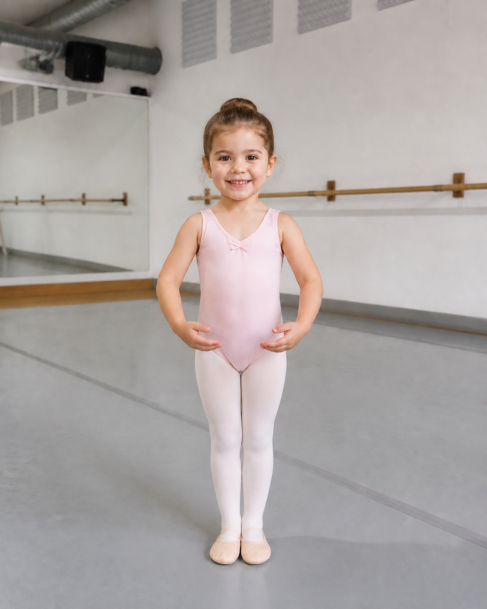
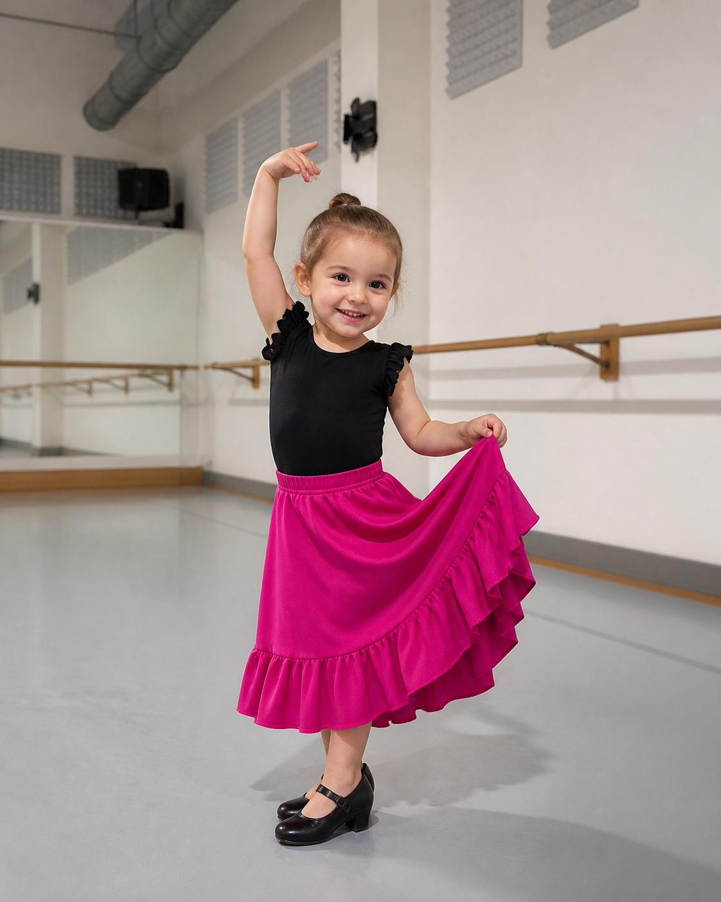

00 · Primeros Pasos
El primer encuentro con la danza.
Una clase pensada para niñas y niños de 3 años: juego, música y movimiento para descubrir el cuerpo con alegría y confianza.
- 3 años
- Jueves · 17:30–18:30
- Media clase de Preballet
- Media clase de Flamenco